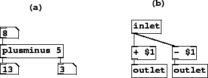

The examples for this chapter will use Pd's encapsulation mechanism, which permits the building of patches that may be reused any number of times. One or more object boxes in a Pd patch may be subpatches, which are separate patches encapsulated inside the boxes. These come in two types: one-off subpatches and abstractions. In either case the subpatch appears as an object box in another patch, called the parent.
If you type ``pd" or ``pd my-name" into an object box, this creates a one-off subpatch. The contents of the subpatch are saved as part of the parent patch, in one file. If you make several copies of a subpatch you may change them individually. On the other hand, you can invoke an abstraction by typing into the box the name of a Pd patch saved to a file (without the ``.pd" extension). In this situation Pd will read that file into the subpatch. In this way, changes to the file propagate everywhere the abstraction is invoked.
A subpatch (either one-off or abstraction) may have inlets and outlets that appear on the box in the parent patch. This is specified using the following objects:
 ,
,
 :
create inlets for the object box containing the subpatch. The
inlet~ version creates an inlet for audio signals, whereas
inlet creates one for control streams. In either case, whatever
comes to the inlet of the box in the parent patch comes out of the
inlet or inlet~ object in the subpatch.
:
create inlets for the object box containing the subpatch. The
inlet~ version creates an inlet for audio signals, whereas
inlet creates one for control streams. In either case, whatever
comes to the inlet of the box in the parent patch comes out of the
inlet or inlet~ object in the subpatch.
 ,
,
 :
Corresponding objects for output from subpatches.
:
Corresponding objects for output from subpatches.
Pd provides an argument-passing mechanism so that you can parametrize different invocations of an abstraction. If in an object box you type ``$1", it is expanded to mean ``the first creation argument in my box on the parent patch", and similarly for ``$2" and so on. The text in an object box is interpreted at the time the box is created, unlike the text in a message box. In message boxes, the same ``$1" means ``the first argument of the message I just received" and is interpreted whenever a new message comes in.
An example of an abstraction, using inlets, outlets, and parametrization, is shown in Figure 4.11. In part (a), a patch invokes plusminus in an object box, with a creation argument equal to 5. The number 8 is fed to the plusminus object, and out comes the sum and difference of 8 and 5.
|  |
The plusminus object is not defined by Pd, but is rather defined by the patch residing in the file named ``plusminus.pd". This patch is shown in part (b) of the figure. The one inlet and two outlet objects correspond to the inlets and outlets of the plusminus object. The two ``$1" arguments (to the + and - objects) are replaced by 5 (the creation argument of the plusminus object).
We have already seen one abstraction in the examples: the output~ object introduced in Figure 1.10 (Page  ). That
example also shows that an abstraction may display controls as part of its box
on the parent patch; see the Pd documentation for a description of this
feature.
). That
example also shows that an abstraction may display controls as part of its box
on the parent patch; see the Pd documentation for a description of this
feature.